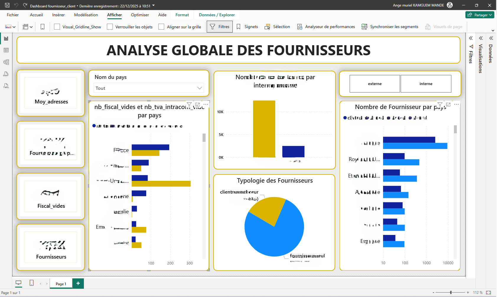

DigitalNext – Dashboard Retour Produits

🎯 Objectif :
- Identifier les fournisseurs incomplets (fiscaux, TVA, adresse)
- Segmenter les fournisseurs par typologie (client-fournisseur ou non)
- Suivre la répartition par pays et le volume d’adresses par fournisseur
- Mettre en lumière les risques liés à l’absence d’informations critiques
🚀 Particularité :
Construction d’un référentiel fournisseurs enrichi croisant plusieurs indicateurs de qualité, de typologie et de fiscalité.
Mise en évidence des zones critiques (données fiscales manquantes, typologies floues), facilitant la fiabilisation à l’échelle internationale.
📊 Indicateurs & Analyses :
- Nombre total de fournisseurs et répartition interne / externe
- Analyse géographique des fournisseurs par pays
- Taux de complétude des données fournisseurs
- Détection des fournisseurs avec données fiscales manquantes (TVA intracom, numéro fiscal)
- Typologie des fournisseurs (fournisseur seul vs client-fournisseur)
- Analyse des risques liés à la qualité des données fournisseurs
🛠️ Outils & Compétences :
Power BI (KPI, storytelling), DAX (calculs avancés),
Power Query (nettoyage), Power Automate (automatisation),
UX Design (interface claire + priorité aux décisions).
automatisation de nettoyage et catégorisation via règles métiers.
🔒 IMPORTANT :
Pour des raisons de confidentialité, le dashboard complet ainsi que les données utilisées
ne peuvent pas être publiés car ils contiennent des informations internes sensibles.